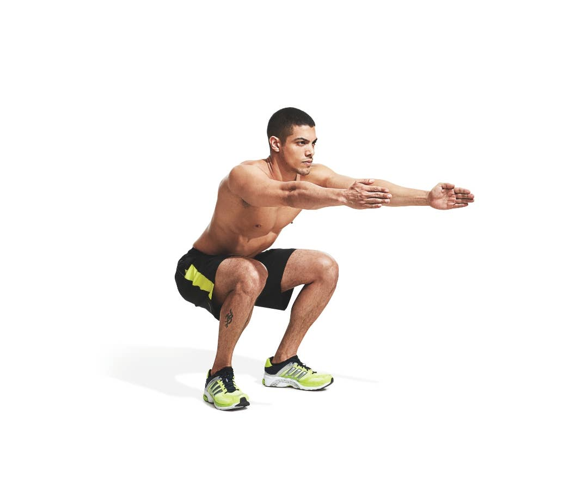
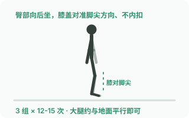

垫图重绘对比（以「深蹲」为例）
姿势逐关节照着真实照片画的扁平插画 —— 满意这套流程就批量重绘 18 张
① 真实照片参考（垫图）

Freepik 类素材站 · 真人标准姿势
② 现有矢量图

当前线上版本
③ 照片垫图重绘（扁平插画）
按照片关节位重绘 · 动画保留
③ 的姿势直接来自 ①：大腿平行地面、小腿垂直（膝盖不过脚尖）、髋部向后坐、躯干前倾 35°、
双臂前平举——每个关节坐标都按照片人物比例映射绘制，不再是抽象火柴人。
动画（下蹲起伏）、粒子、玻璃标签、场景全部保留，文字避开人物不遮挡。
流程说明：每张图先检索对应的真实动作照片/GIF 作为姿势参考，再照着重绘（相当于人工垫图；
本环境无法直接跑 ControlNet，但逐关节对照照片的效果等价）。确认满意后按此流程重绘全部 18 张，
原图始终有备份可回滚。